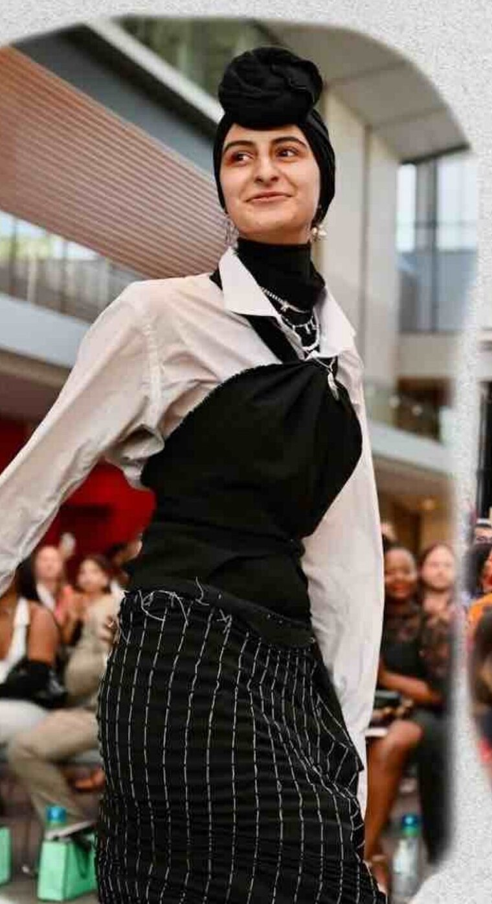
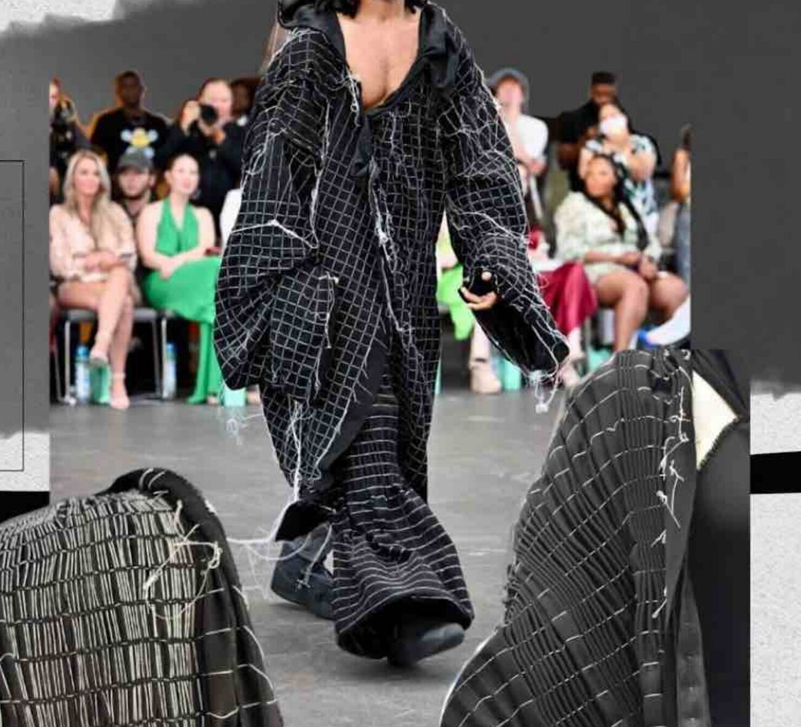
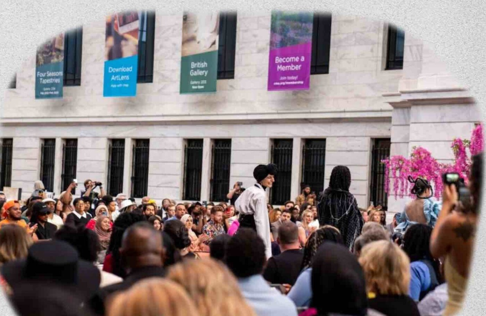

Things are changing, where we can't see them, yet they affect how we live our lives.
who we've become subconsciously, through unconscious consumption.
With the increase in private, unconscious consumption, it has slowly taken away our curiosity — the urge to seek, the push to ask questions. We are influenced by what we consume, so how can we make that influence positive?
Every garment here started as unwanted, unused, donated, or thrifted fabric — a fabric-first practice, limited by what was already waiting to be used. The potential for design is everywhere.
All twenty-four pages of the original deck — the sketches, the notebook, the process. Drag, swipe, or use the arrows.
tap a page to view it full-size
Every look began flat — a rectangle, a length of unwanted fabric. Each one asks the wearer to finish the thought: shorten it, tie it, knot it, let it hang the way it wants to.
psst — I bloom wherever the ice cracks. click me.
Nothing here was bought new for the sake of it. The studio's leftover bolts, a thrifted coat, a donated bag of fabric — the design had to answer to what already existed.
Unwanted, unused, donated, thrifted — the material came before the sketch. The potential for design is everywhere; the rule was to find it, not summon it.
Shorten, lengthen, widen, tighten — wherever on the garment you like. A basic rectangle mends to the form the wearer desires, and in doing so, reveals how it was built.
Like a picture you accidentally took — no moving backward. As soon as an idea came to mind, it was sewn through, mistakes and all.

backstage, between looks
"So much of my work centers around the word 'interesting' — how can we create something that has the potential to plant a seed in someone's mind?"


Flowers Are Blooming in Antarctica is a two-part thesis by Zahra Najafi on unconscious consumption — and on what happens when a garment refuses to be finished without you.
Part A, "Seek.", is nine looks built from fabric that already existed: thrifted, donated, leftover. Each one asks to be shortened, tied, knotted, or worn a different way — proof that a rectangle can become almost anything.